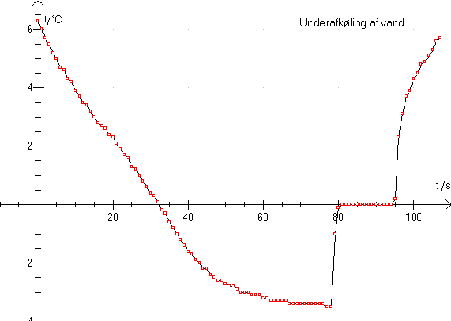

Et reagensglas med vand anbringes i en kuldeblanding.
Forsøget kan med fordel laves som demonstrationsforsøg med storskærm, eller man kan blot vælge at få vist temperaturen med store tal midt på skærmen (tryk på meter). Man får elevernes kommentarer under forsøget og forsøget er fastholdt, så det kan efterbehandles.